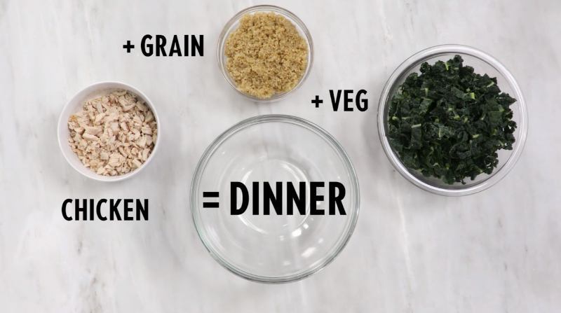

Ingredients
- 2 tablespoons hot water
- 2 tablespoons canola mayonnaise
- 1 1/2 tablespoons olive oil
- 1 tablespoon fresh lemon juice
- 1/2 teaspoon anchovy paste
- 1/4 teaspoon ground black pepper
- 1 garlic clove, grated
- 6 tablespoons shaved Parmesan
- 5 cups thinly sliced stemmed kale
- 1 1/2 cups cooked quinoa
- 1 1/2 cups rotisserie chicken breast
- 2 tablespoons toasted walnuts


Ingredients
- 2 tablespoons hot water
- 2 tablespoons canola mayonnaise
- 1 1/2 tablespoons olive oil
- 1 tablespoon fresh lemon juice
- 1/2 teaspoon anchovy paste
- 1/4 teaspoon ground black pepper
- 1 garlic clove, grated
- 6 tablespoons shaved Parmesan
- 5 cups thinly sliced stemmed kale
- 1 1/2 cups cooked quinoa
- 1 1/2 cups rotisserie chicken breast
- 2 tablespoons toasted walnuts
Preparation
Bring water to boil and cook quinoa according to package directions.
Time: ~15 minutes
While quinoa is boiling, take roasted chicken, remove skin and bone; and chop to bite sized pieces or shred.
Time: 5 minutes
Mix the hot water, mayonnaise, olive oil, lemon juice, anchovy paste, pepper, and 3 tablespoons Parmesan cheese until well combined.
Time: 3 minutes
Toss quinoa, chicken, kale, and Caesar dressing until coated.
Time: 3 minutes
Roughly chop walnuts then add walnuts and olive oil as garnish.
Time: 2 minute
For more information about creating a healthy plate, visit MyPlate. MyPlate gives anyone looking for healthier options access to a ton of recipes that will help them create healthy, tasty plates.